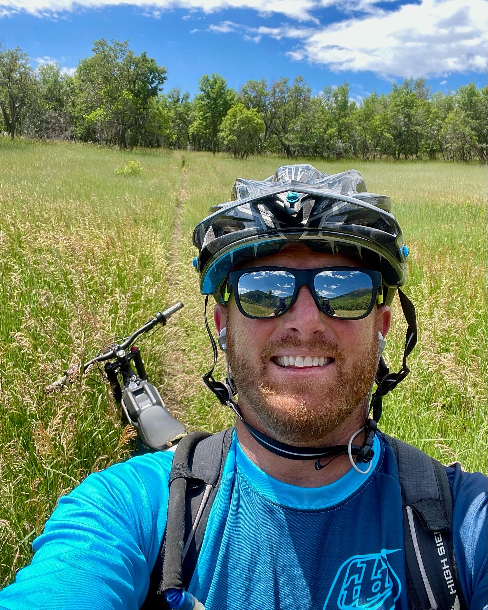

ABOUT KEVIN · BUILDER, AI PRACTITIONER, COACH
Thousands of hours putting AI to work.
Now I’m sharing the playbook.
I’m Kevin. I build real software with AI, and I love the moment an idea starts to click. I’ll help you get there—and understand how to keep going.
HOW I WORK
The magic is in the work behind the prompt.
Good results take more than a clever prompt. You need to shape the problem, give AI useful context, assess its work, and know how to course-correct. I’ve built that judgment on real software projects—and I’ll show you how to use it on yours.
Real project instincts, taught while we build.
See how coaching works
OUT FOR A RIDEA LITTLE OFF-SCREEN
Usually outside, camera close by.
When I’m not building, I’m happiest on a bike, on a ski hill, fishing, taking photos, or cheering on my kids. It’s how I recharge, stay curious, and come back ready for the next idea.
🚵 Biking
⛷️ Skiing
🎣 Fishing
📸 Photography
👨👩👧👦 Family & kids’ games
“
Learn by building something that matters to you.
That’s the heart of Kirkland Product Lab.